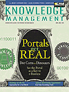

|
 April 2000 Subscribe e-Mail the Editor |
The Knowledge-Devouring WebAs Internet-based information sources expand, opportunities for knowledge creation get left behind.By Paul A. Strassmann
Last month, I estimated the Knowledge Capital of major U.S. corporations employing 36.2 million people as worth $6.4 trillion. Assuming that the rest of the workforce has similar characteristics, we can speculate that total U.S. knowledge assets could be as high as $25 trillion. Accountants would like to tag such assets so they could be recorded and managed. As data and information migrate from the heads of individuals and filing cabinets to computer networks, concern will grow about the reliability, security and trustworthiness of the container where this capital resides. Data, text and images are the raw materials to be extracted from spinning disks (as information) and ultimately consumed (as knowledge). When that happens, knowledge assets are created. The bottleneck in this entire sequence lies in the conversion of information into knowledge capital, and the Internet - the medium of choice in which such transmutations occur - is part of the problem. The Internet is starting to sputter as a knowledge formation engine. Its content is leaking. Its capability to distill available information into useful knowledge is limping. As the scope of Internet services expands, it magnifies the knowledge management difficulties for organizations. The phenomenal growth in the information resources accessible via the Internet is aggravating, rather than ameliorating, this situation. Here are some of the metrics I considered in arriving at these conclusions.
Despite the hoopla about the "global memory" and the utopian articles about the Internet as a shared treasure trove of knowledge, the dream of providing individuals with direct access to the sources of all knowledge is far from becoming a reality. As the volume of data flushed through Internet pages grows, the difficulties of finding anything comprehensive and reliable will worsen, unless people pay middlemen to do the work. To compensate for the growing inadequacies of content-indexing methods and the limited reach of commercial search engines, the Internet knowledge space continues to be broken up. It is now partitioned into islands of special-purpose e-commerce marts and archives that offer information to customers that wish to satisfy specialized interests. This trend leaves the Web far short of its potential as the Universal Library in the Ether. The information that is migrating to the Internet is too valuable to become inaccessible and not easily retrievable in whatever language or format it presents itself. We need retrieval tools that analyze more than indexes that have been abstracted to maximize portal revenues. For hundreds of billions of pages, pictures, videos and audio tracks, we need search engines that individuals can customize to their own preferences, rather than inquiry formats that have been precooked by a standard software package. What is at stake here is the ability to reach and make use of an information universe that is denominated in petabytes (thousands of terabytes, or millions of gigabytes) instead of the paltry amount now available, which is at least four orders of magnitude below what it ought to be. Paul A. Strassmann originated the trademarked concepts "information productivity," "return-on-management" and "knowledge capital." |